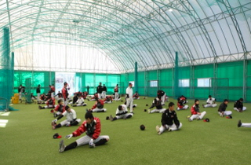
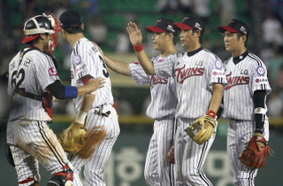
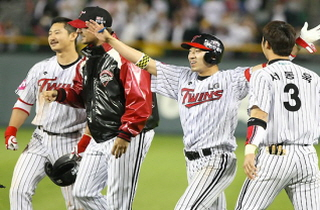
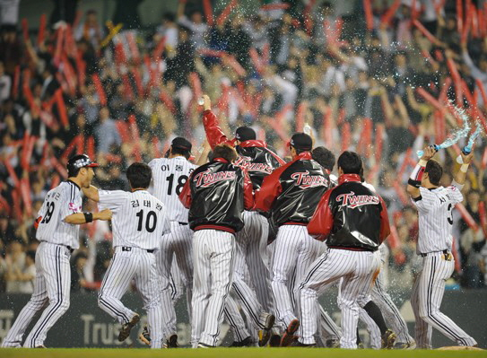

2011's History
" 2012년, ‘전화위복轉禍爲福’의 해가 될 것인가 "
LG마운드, 특히 선발 로테이션은 큰 공백을 안게 됐다, 하지만 선수단은 흔들리지 않았다. 베테랑 선수들이 먼저 앞장서 훈련 분위기를 다잡았다. 일본 오키나와 스프링캠프에서 대안으로써 충분한 가능성을 제시한 투수들도 속속 등장했다.

하위권 거론을 거부한다. LG의 '숨은 10인치'
오키나와 스프링캠프에서 성장한 대표적인 선수는 임찬규(20), 임정우(21) 등 '영건'들이다. '10승 투수'를 장담할 수는 없지만 일본 팀과의 연습경기에 선발 등판해 좋은 투구 내용을 과시하면서 활용 가능성을 제시했다. 베테랑 이대진도 재기의 칼날을 갈고 있다. 이적과 방출, 부상의 고난을 딛고 5년 만에 마운드에 선 신재웅도 좌완 갈증에 단비를 뿌려줄 기대주로 부상했다. 유원상, 김광삼, 정재복 등 선발 자원은 결코 부족하지 않다. ‘마무리 부재’의 오래된 숙제는 깜짝 카드인 리즈로 해결됐다. 경찰청 복무를 마치고 복귀한 우규민과 이동현은 리즈 앞에서 활약이 기대된다. 전문가들은 2012시즌 디펜딩챔피언 삼성과 KIA의 ‘양강 구도’를 예상하고 있다. 그 전망 뒤에 LG는 하위권으로 거론된다. LG는 과연 하위권 전력인가. 지난해와 비교해 언뜻 눈에 보이는 전력만 본다면 틀린 말은 아니다. 그러나 이는 LG의 ‘숨은 10인치’를 제대로 보지 못한 평가이다. LG는 지난해 59승 72패 2무를 기록했다. 가을 축제의 말석을 차지한 4위 KIA는 70승(63패)을 수확했다. 흔히 말하는 4강 커트라인, ‘5할 승률’을 고려하면 LG가 지난해 거둔 승수에서 10승을 더 챙긴다면 올해 4강에 진입할 수 있다.

4강 커트라인 '5할 승률'의 플러스 요인
올해 10승에 해당하는 플러스 요인을 찾을 수 있을까. 그렇다. 분명히 있다. 외부 영입은 없었지만 부상 복귀 선수와 군 제대 선수 등이 경쟁력을 높여주고 있다. 김기태 감독도 부상에서 회복한 봉중근, 정재복, 신재웅과 지난해 경찰청에서 퓨처스리그 다승, 방어율 1위에 오른 우규민 등 투수들을 주목하고 있다. 봉중근은 빠른 회복세를 나타내 5월 이후 복귀해 불펜 에 힘을 보내기 위해 준비하고 있다. 정재복은 선발과 불펜에서 모두 활용 가능하다. 신재웅도 마찬가지다. 불펜 약점이 단번에 메워질 수 있는 진용이다. 마운드가 든든해진다면 LG는 충분히 4강권에 도전할 수 있는 잠재력을 갖고 있다. 타선에 서는 두 명의 이병규와 박용택, 이진영, 이대형, 정성훈 등 어디에 내놓아도 손색없는 라인업을 여전히 갖추고 있다.

10년 만에 4강 도전, 기대되는 LG의 대장정
김기태 감독은 선수들에게 자율을 보장하면서 전임 감독과 차별화에 나서는 한편 강한 책임감을 주문하고 있다. 새해 첫 훈련 소집 때 체력 테스트를 통해 공수의 핵심 선수들을 해외 전지훈련 명단에서 대거 탈락시킨 것이 대표적인 예이다. 올 가을에 드러날 결과를 누구도 미리 알 수 없다. 한 가지 분명한 점은 그 목표와 지향점을 향해 LG가 달라지고 있다는 것이다. ‘권불십년’(權不十年) 아닌가. 영원한 권세가 없듯이 역으로 LG가 계속 하위권에만 떨어져 있을 리도 없다. 김기태 김독은 새해 ‘60패’를 목표로 내세웠다. 73승을 바라는 마음을 우회적으로 표현한 말이다. 외국인 선수까지 포함해 1,2군 선수 73명 전원에게 1승씩을 선물하겠다는 각오다. LG는 지난해 좋지 않은 성적에도 100만명을 넘어선 팬들(119만1715명)의 열성적인 응원을 받았다. ‘백만대군’이 부럽지 않다. 선수들이 100만 팬들의 함성을 잊지 않고, 올 해도 그 응원이 선수단과 함께 한다면 꿈은 반드시 이뤄질 것이다. 아니 꼭 이뤄야만 한다. 불가능은 없다. LG의 10년 만에 4강 도전, 이제 그 대장정을 지켜볼 때이다.

LG스포츠
운영자이메일
개인정보취급방침
이메일주소 무단 수집거부
사이트맵
서울특별시 송파구 잠실 1동 10번지 고객센터 TEL 1544-4961,4962
Copyright © LG트윈스프로야구단 All Rights Reserved.
Copyright © LG트윈스프로야구단 All Rights Reserved.